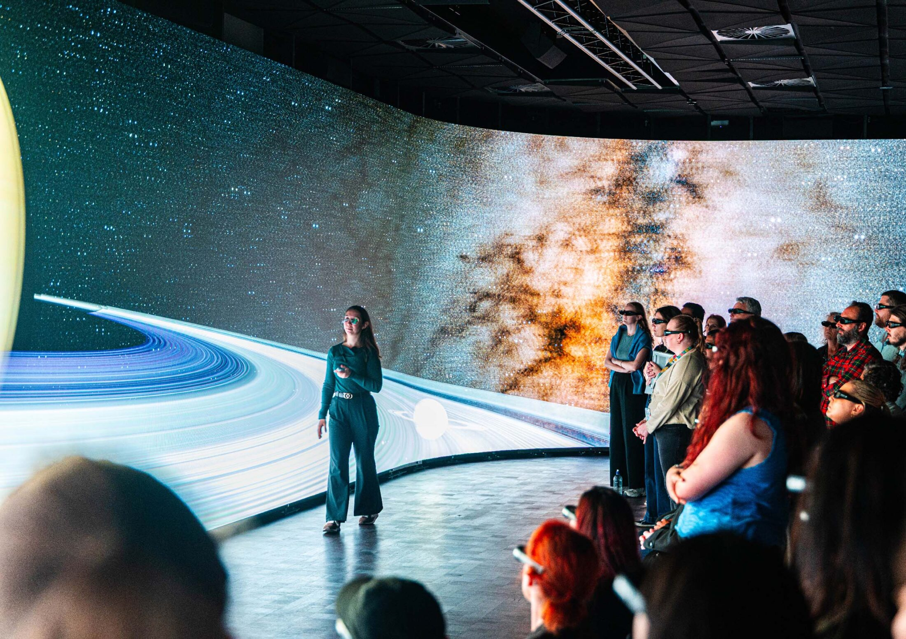

Primary cohorts
Wonder-led visual journeys can introduce planets, motion, scale and the night sky through vivid shared experiences.
School visits
Give students an expert-guided encounter with space science inside one of Australia's most ambitious immersive visualisation environments.
Plan a visit
Plan a visit

Immersive learning
Move beyond diagrams and flat screens into an environment that makes distance, scale and motion feel real.
Educational visits can be shaped for different ages and curriculum contexts. Guided exploration connects big astronomical ideas to observation, modelling, evidence and the work of contemporary scientists.

Why it connects
Students can compare worlds, follow the life cycle of stars and see structures that are difficult to communicate on a conventional classroom screen.
Suitable audiences
Specific content, timing and group requirements are confirmed with the SVU team rather than assumed in this concept.
Wonder-led visual journeys can introduce planets, motion, scale and the night sky through vivid shared experiences.
Deeper explorations can connect astrophysics, data, modelling and contemporary research to classroom learning.
Visit goals can be discussed in advance so the experience supports the questions your class is already asking.
The visit journey
Share year levels, learning goals, group needs and preferred timing.
The SVU team can confirm the right content, format and practical arrangements.
Final arrival, access and supervision information is provided with a confirmed visit.
An expert presenter guides students through an immersive scientific journey.
Practical planning
Share the concepts or learning outcomes you would like the visit to support.
Capacity, supervision and session structure are confirmed for each school enquiry.
Available dates and visit duration are provided by the SVU team during planning.
Tell the team about mobility, sensory or other access requirements in advance.
Educational visit enquiry
This is a visual form preview only. Details entered here are not submitted, stored or sent.